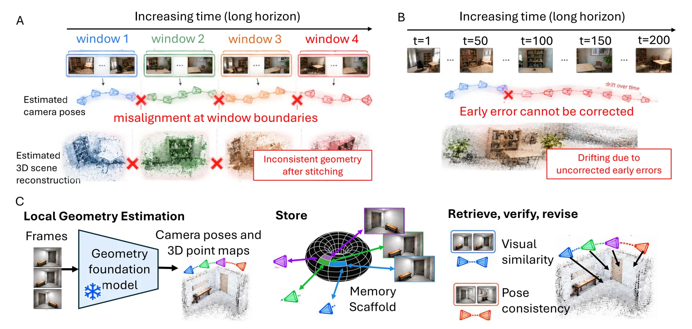
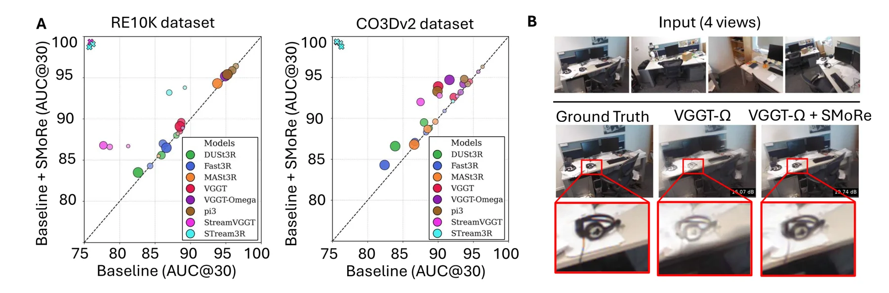
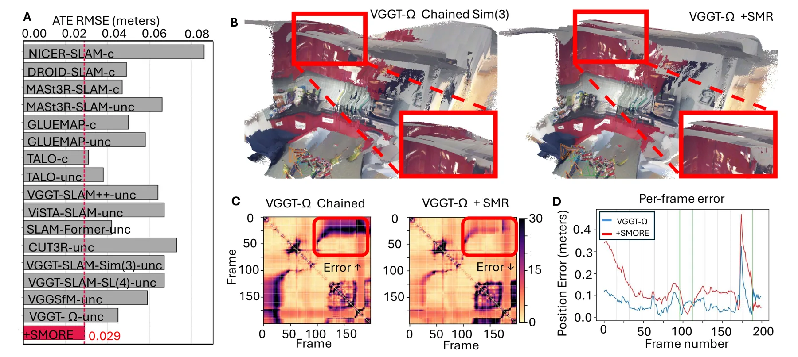
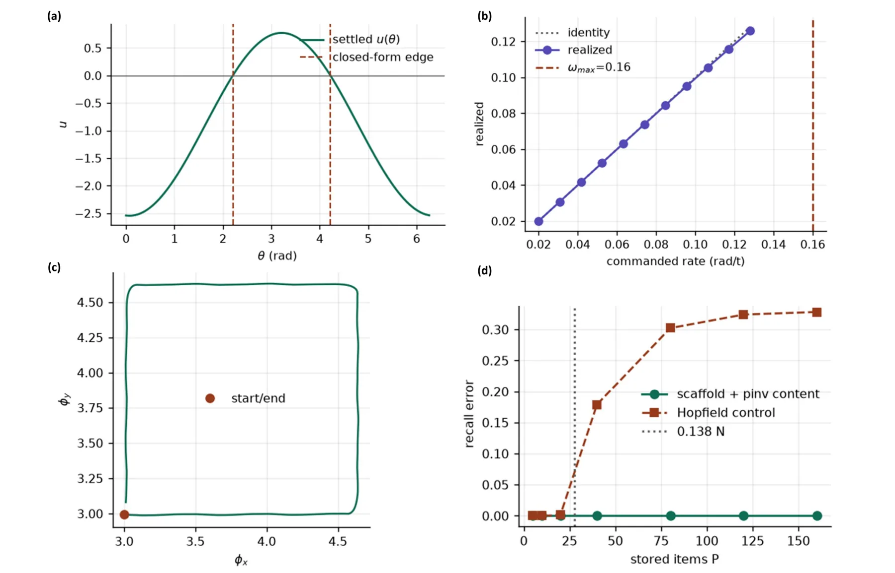
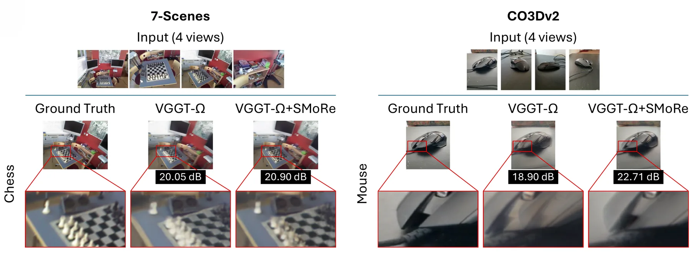
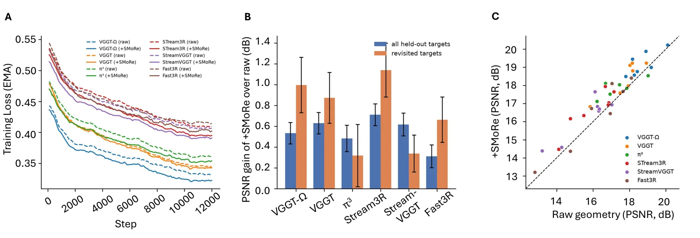

SMORE：给几何基础模型配一套可修订的外部记忆
Remember, Revisit, Revise: Scaffold Memory for Long-Horizon 3D Geometry
SMORE = 空间脚手架 + 内容库，四步 Store/Retrieve/Verify/Revise。位置用多尺度周期模块、朝向用三个连续吸引子环编码，经固定随机投影到 1024 维后只保留 64 个最大激活做稀疏化；视觉用冻结 DINOv2 ViT-S/14 的 384 维描述子，与记忆状态做双向联想（RLS 增量更新）。检索只靠视觉 top-5 并过滤近邻/前窗/低相似；验证要求从两个不同源窗口各取一对历史参考，仅当两处提出的全局放置旋转差 ≤10° 且位置差 ≤ 当前重建空间尺度时才接受；修正按 Sim(3) 渐进分配。效果：CO3Dv2 N=200 时 VGGT 90.0→93.9、VGGT-Ω 91.6→94.7、π³ 89.9→93.3 AUC@30；Replica 深度总误差平均降约 58%；ScanNet++ VGGT 24.95→6.05 cm；7-Scenes SLAM VGGT-Ω ATE 4.5→2.9 cm。
mean ATE RMSE on 7-Scenes
CO3Dv2 AUC@30 at N=200
multi-view depth error reduction
ScanNet++ overall Chamfer
作者、单位与技术谱系 · Research context
作者与单位
研究脉络
- VGGT / VGGT-Ω / VGGT-SLAM 系列方法基座关系：把 VGGT 与其变体作为被增强的几何基础模型骨干，并复用其 32 帧窗口预测协议；SLAM 评测对照 VGGT-SLAM(++)、VGGSfM 等以 VGGT 为核心的方法。[官方 HTML 全文（第 3 节）]
- Vector-HaSH 式联想记忆方法上游关系：空间脚手架的多尺度周期位置编码与连续吸引子环直接跟随 Vector-HaSH；论文用其做「位置—内容」联想而非查表索引。[官方 HTML 全文（第 2.1 节）]
- StreamVGGT / STream3R 等流式模型方法上游（对照）关系：流式模型保留跨帧因果状态但无法修订早期估计；SMORE 与其在同一评测中共用相同的 32 帧窗口策略，以便分离「保留历史」与「修订历史」两种能力。[官方 HTML 全文（第 3.1 节、表 1）]
合作网络
- NTU 内部共同署名Nanyang Technological University（Deep NeuroCognition Lab） → SMORE 两位作者关系：共同署名 / 同一单位[arXiv 官方 HTML（首页作者与单位）]
- 对冻结模型的依赖SMORE → 被增强的几何模型（VGGT/VGGT-Ω/π³/DUSt3R/MASt3R/Fast3R 等）与 DINOv2 ViT-S/14关系：官方模型依赖（明确技术依赖）[官方 HTML 全文（第 2.1、3 节）]
- 数据集/基准依赖SMORE 评测流程 → CO3Dv2、RE10K、Replica、ScanNet++、7-Scenes关系：数据集/基准依赖[官方 HTML 全文（第 3 节）]
- 代码发布状态（待核验）SMORE → 公开代码/项目页关系：未发现公开代码入口（待核验）[arXiv 官方 HTML（全文与页脚）]
作者与单位来自论文首页署名（论文报告的事实）；「基座/上游」定位来自论文引文与正文的明确表述（基于来源的解读）；论文未披露跨机构合作，故不写导师/师生或实验室隶属关系；代码可用性按抓取所见记录，未做推断。
方法本质拆解 · What actually changed
是不是微调？——完全不动主干，只在线更新外部记忆
几何基础模型与 DINOv2 视觉编码器全程冻结，唯一被更新的是外部记忆：脚手架到记忆表示的固定随机投影与岭回归反解（离线固定/闭式）、视觉描述子与记忆状态之间的双向映射（用递归最小二乘在线增量更新），以及内容库中存储的帧、位姿与点图。唯一「训练」的成分是 NVS 消融里为评测而单独训练的 3D Gaussian 解码器，但论文明确要求各对照共享同一架构、数据、调度与随机种子，以便差异只来自几何来源。
有没有额外约束？——稀疏编码、双证据验证门与渐进修正
约束作用在「记忆表示」与「是否接受一次修订」两处变量上。记忆侧：脚手架状态必须经固定随机投影到 1024 维并只保留 64 个最大激活（稀疏码），作者给出动机是降低记忆单元间干扰；位置用多尺度周期编码以避免单尺度周期表示的歧义。验证侧是硬门：检索候选必须排除 64 帧内、前一窗口与 cos<0.5 的项；必须能从两个不同源窗口各取一对历史参考；两处提出的全局放置旋转差 ≤10°、位置差 ≤ 当前重建空间尺度 E_k，否则整次检索作废；修正量按 Sim(3) 渐变分配而非一次性跳变。
推理/后端到底做了什么？——有界窗口推理 + 检索/验证/修订循环
推理是流式循环而非单次前向：每处理完一个 32 帧窗口，就存入内容库并更新联想映射；对当前帧做视觉检索得到候选重访；对每个候选构造检索对，让几何模型一次性联合处理「32 帧当前窗口 + 4 帧历史帧」（共 36 帧）得到共同局部坐标系，再从历史放置推出候选全局放置；两处放置通过验证门后联合拟合修正放置，并把修正按 Sim(3) 分配给中间窗口（存储的位姿/点图仍表达在各自源窗口局部系中，随全局放置一起移动）。正文结果默认不含离线全局优化；没有新的因子图后端或全局 BA 被引入，后端仍是几何模型自身的窗口预测 + 外部放置修订。
方法本质是什么？——把「重访」变成可信的历史锚点来修订全局放置
本质是把长时序误差的来源定位在「窗口之间的全局放置」这一层，并用联想记忆 + 双证据几何核验把重访变成可信锚点，再用渐进 Sim(3) 把修正写回历史窗口。它改变的是窗口坐标系之间的相对关系（T_k），而不是模型权重、也不是局部几何；明确没有做的是：没有微调主干、没有改局部点图、也没有把修订扩展到局部几何预测（作者列为未来工作）。
输入/先验 = RGB 序列 + 冻结的几何基础模型与 DINOv2 + 32 帧窗口/50% 重叠策略；改变的位置 = 窗口的全局相似放置 T_k（以及被渐进修正的中间窗口放置）；约束或合并动作 = 联想式稀疏记忆（多尺度周期 + 吸引子环，保留 64 个最大激活，RLS 双向映射）+ 视觉 top-5 检索 + 双来源一致性验证门（≤10°、≤E_k）+ Sim(3) 渐进分配；直接效果 = 冻结主干下 7-Scenes 平均 ATE 4.5→2.9 cm、CO3Dv2 AUC@30 +3.9、Replica 深度误差约 −58%。

动机与问题Motivation
动机与问题
既有做法分两类，各有硬伤：前馈几何模型按定长窗口独立预测再拼接，误差在窗口边界持续累积；流式模型保留因果状态，却缺乏「修订」能力，一旦早期估计偏了，后续只能在错误的坐标系上继续。论文同时指出，这两类模型在长序列上还会遇到显存/状态膨胀（例如流式基线在长序列 OOM）。由此提出的问题是：能否在不改主干权重的前提下，给模型一个外部接口，使历史观测能被再次调用并纠正早期错误。论文用「联想记忆」而不是「查找表」来回答——因为检索时并不知道重访帧的身份与位置，只能用当前视觉作为部分线索去召回。
方法Method
方法总览
SMORE 由空间脚手架与内容库组成。处理时默认 32 帧窗口、16 帧重叠，帧只存于其首个出现的源窗口；每个窗口在自身局部坐标系预测位姿与点图，全局坐标定义为第一窗口坐标，窗口间用重叠帧的预测位姿做鲁棒相似对齐得到 T_k。记忆操作四步：Store 把新帧的位姿与点图存入内容库，并用固定随机投影把脚手架状态压成稀疏记忆表示 h；Retrieve 只用当前帧的视觉描述子（经视觉–记忆联想得到 h̃_q）去检索 top-5 相似帧并过滤；Verify 对每个候选再取同源窗口内 ±3 帧构成「检索对」，要求两个来自不同源窗口的对给出可比的全局放置；Revise 用被接受的证据估计修正放置 T_k^corr，并按 Sim(3) 沿轨迹渐进分配修正量。
关键技术细节
空间脚手架跟随 Vector-HaSH 的思路：位置由三个不同空间尺度的周期模块编码，偏航/俯仰/滚转由三个连续吸引子环表示，拼接成状态 g_i；g_i 经固定随机线性投影到 1024 维，只保留 64 个最大激活再归一化，作者明确说明这个稀疏化是为了降低记忆单元之间的干扰、提高有效容量，并用岭回归学一个反向映射把 h_i 还原成脚手架状态（因此它是联想式重建而非索引查表）。视觉侧用冻结 DINOv2 ViT-S/14 得到 384 维归一化描述子 s_i，s_i 与 h_i 之间学双向映射并用递归最小二乘增量更新。验证门是硬阈值：两个独立历史参考提出的旋转差必须 ≤10°、位置差必须 ≤ 当前重建的空间尺度 E_k（相机到质心的中位距离），否则拒绝该检索；通过后不再对两个提案取平均，而是用四帧历史联合拟合单一修正放置。

实验Experiments
实验设置
数据集与规模：位姿用 CO3Dv2（物体中心视频，8–68 s，每序列 200 标注帧）与 RE10K（100 段，6.7–9.3 s），每序列均匀采 N∈{10,50,100,200} 帧；多视角深度用 Replica（18 个合成室内场景，每场景约 2000 帧）、点云重建用 ScanNet++（1006 个高保真室内场景）；SLAM 用 7-Scenes 全部 7 个室内场景（每段 17–33 s）；新视角合成用 7-Scenes（156 个留出视图）与 CO3Dv2（888 个）。指标：位姿用成对误差与 AUC@30，深度/重建用厘米级 accuracy/completeness/overall（Chamfer），SLAM 用相似对齐后的 ATE RMSE（米），NVS 用 PSNR/SSIM/LPIPS。对照方法：DUSt3R、Fast3R、MASt3R、VGGT、VGGT-Ω、π³ 六个前馈模型与 StreamVGGT、STream3R 两个流式模型（各自与原版对比）；SLAM 上对照 NICER-SLAM、DROID-SLAM、MASt3R-SLAM、GLUEMAP、TALO、VGGT-SLAM(++)/VGGSfM 等已发表方法。每个实验跑三次取聚合。
实验数字与比较
位姿（来源：论文图 2A）：CO3Dv2 在 N=200 时 VGGT 从 90.0 升到 93.9 AUC、VGGT-Ω 91.6→94.7、π³ 89.9→93.3；增益随序列变长而增大，RE10K 上增益较小（相机以前向运动为主、重访机会少）。多视角深度/点云（来源：论文表 1，厘米，越低越好）：Replica 上 SMORE 使总误差平均下降约 58%，其中 VGGT 从 9.15 降到 2.49、VGGT-Ω 从 7.50 降到 2.00；ScanNet++ 上 VGGT 24.95→6.05、VGGT-Ω 20.80→4.95、StreamVGGT 17.80→4.50。SLAM（来源：论文图 3A）：VGGT-Ω 平均 ATE 4.5→2.9 cm，低于最好标定基线 3.1 cm 与最好未标定基线 3.8 cm；成对位置误差 8.1→6.5 cm。NVS（来源：论文表 2）：6 个几何模型在 7-Scenes 上 PSNR/SSIM/LPIPS 全部改善；CO3Dv2 上 VGGT-Ω/VGGT/π³/StreamVGGT 的 PSNR 提升 0.34–0.64 dB。
消融/失败边界
设计消融（来源：论文表 S4）：把联想脚手架换成查找表会退化，支持联想记忆在存储/检索/修订上更有效；稀疏度存在「稀疏编码 vs 信息保留」权衡；DINOv2 优于其他视觉描述子；脚手架维度在测试范围内稳定；检索证据太少会退化、太多收益递减；渐进式修订优于沿轨迹均匀分配修正；更大窗口与更大重叠一般更好但计算/内存成本上升。计算（来源：表 S5/S6）：SMORE 让几何模型的活跃 GPU 工作集大致有界，代价是额外的外部记忆管理与少量 CPU/PFLOP/运行时开销；例如 STream3R 在 N=100 就 OOM，加 SMORE 后仍能处理完整序列。明确的失败边界：无法修正「局部几何预测本身错误」的情况——作者在 CO3Dv2 上指出 STream3R 与 Fast3R 的 NVS 增益更小，可能反映局部几何的残留误差无法仅靠窗口放置修订解决；此外若不足两个有效检索对，则不施加任何检索修正（退回链式窗口）。
局限与迁移Limitations & Transfer
局限与待核验
作者明确承认的限制：检索验证本身带来额外计算，未来需要更高效的可靠召回机制；SMORE 目前只修订全局窗口放置，尚未把修订扩展到局部几何预测（作者列为未来工作）。我们的待核验项：(a) 抓取时未在正文或页面上找到公开代码仓库或项目页，端到端复现属待核验；(b) 阈值（10°、位置差 ≤ E_k、DINOv2 cos ≥ 0.5、排除 64 帧内候选）是否在差异更大的数据集上仍稳健，正文只报告了默认设置下的行为；(c) 正文结果多为「仅在线检索/验证/修订、不含离线全局优化」，加入附录中的离线位姿图优化后收益与外界环境的交互未在主表体现；(d) 外部记忆随序列线性增长（内存主要落在几何模型活跃 GPU 上下文之外），但长期运行的存储上界与淘汰策略未在正文给出。
与你研究路线的关系
可迁移点有三。第一，「两个独立来源的历史参考 + 旋转/平移一致性阈值」是可直接搬到回环/重访检测里的双证据验证门：要求两处独立推断一致才接受，且用当前重建的空间尺度做位置容差（而非固定米数），天然适配不同尺度的场景。第二，「渐进修订」——把修正量沿轨迹分配、历史参考不动、当前窗口拿全量——是把回环修正写回历史状态的一种稳定做法，可比你现有的固定权重分散更可解释。第三，「用视觉描述子做部分线索去召回记忆」与「用固定随机投影 + 稀疏化提高记忆容量」的组合，是把重定位从「显式索引」改成「联想召回」的一个可复用工程配方。下一步实验建议：(a) 在你现有长序列上做「链式窗口 vs 记忆修订」最小对照，量测点选 ATE 与时序远端帧对的相对位姿误差；(b) 把 10°/空间尺度阈值做敏感性扫描，看你的场景下是否存在「验证太松→误回环、太紧→不修正」的拐点；(c) 若接入你的后端，先确认论文只修订全局放置这一边界，避免期待它能修局部几何。







